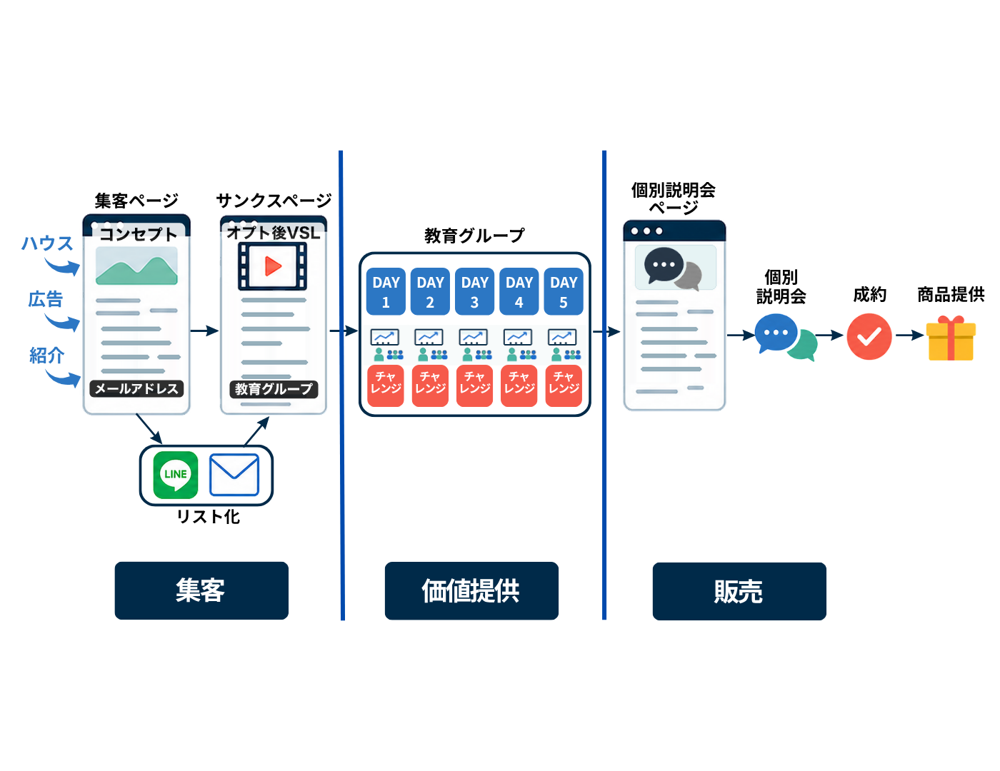
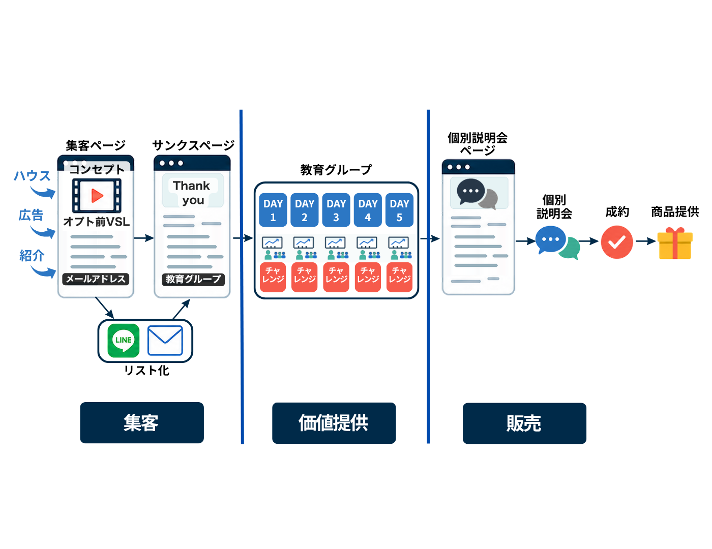
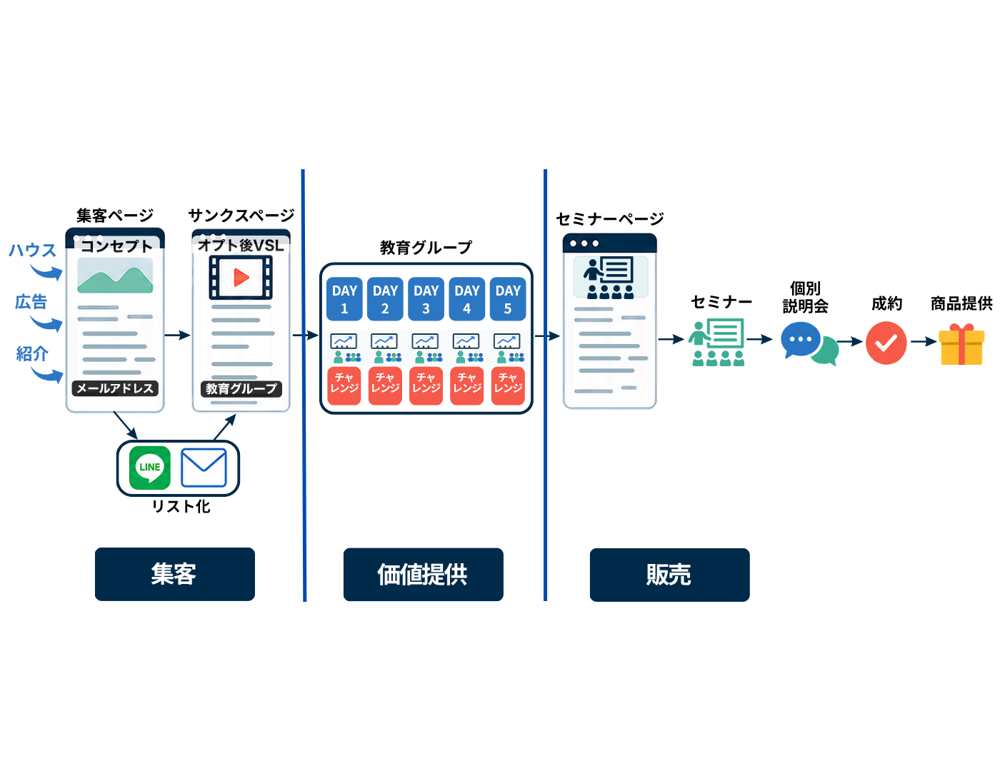
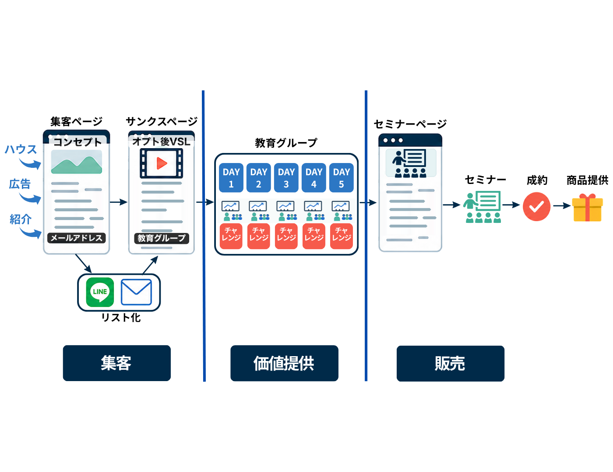
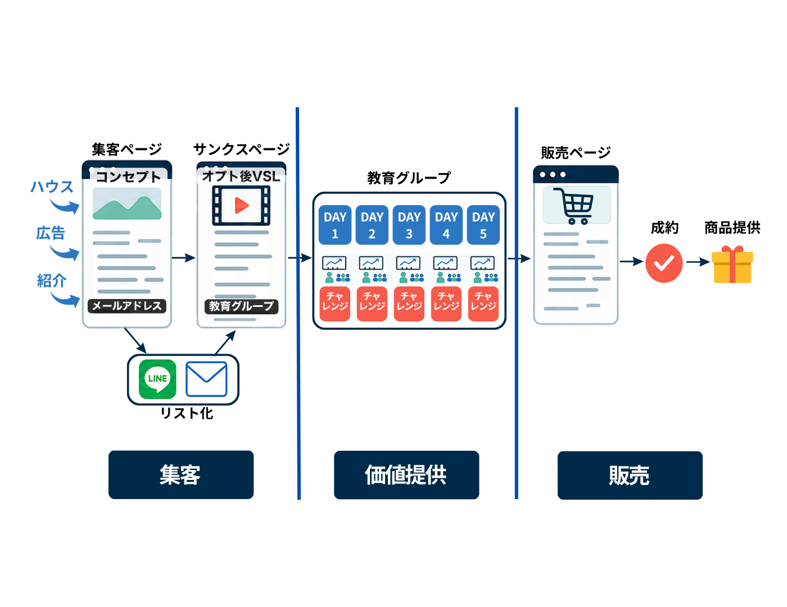

ファネル工程軸
工程表の各ステップは、この流れのどこを作っているかを確認しながら進めます。
格納済みファネルパターン
全体図はパターン選択用の参照として置きます。実際の工程表は、選んだ集客・価値提供・販売の組み合わせに合わせて切り替える前提です。

Pattern 06 / 標準候補
オプト後VSL × 個別説明会
| 集客 | 集客ページ → サンクスページ上のオプト後VSL → リスト化 |
|---|
| 価値提供 | 教育グループ Day1〜Day5 |
|---|
| 販売 | 個別説明会ページ → 個別説明会 → 成約 → 商品提供 |
|---|

Pattern 07 / オプション
オプト前VSL × 個別説明会
| 集客 | 集客ページ上のオプト前VSL → サンクスページ → リスト化 |
|---|
| 価値提供 | 教育グループ Day1〜Day5 |
|---|
| 販売 | 個別説明会ページ → 個別説明会 → 成約 → 商品提供 |
|---|

Pattern 08 / 選択候補
オプト後VSL × セミナー→個別説明会
| 集客 | 集客ページ → サンクスページ上のオプト後VSL → リスト化 |
|---|
| 価値提供 | 教育グループ Day1〜Day5 |
|---|
| 販売 | セミナーページ → セミナー → 個別説明会 → 成約 → 商品提供 |
|---|

Pattern 09 / 選択候補
オプト後VSL × セミナー販売
| 集客 | 集客ページ → サンクスページ上のオプト後VSL → リスト化 |
|---|
| 価値提供 | 教育グループ Day1〜Day5 |
|---|
| 販売 | セミナーページ → セミナー → 成約 → 商品提供 |
|---|

Pattern 10 / 選択候補
オプト後VSL × 販売ページ直販
| 集客 | 集客ページ → サンクスページ上のオプト後VSL → リスト化 |
|---|
| 価値提供 | 教育グループ Day1〜Day5 |
|---|
| 販売 | 販売ページ → 成約 → 商品提供 |
|---|
追加で欲しい単独画像
- 集客単独: オプト後VSL、オプト前VSL、フォーム登録のみ、広告/ハウス/紹介の入口違い。
- 価値提供単独: 2チャレ、3チャレ、5チャレ、次ライブがDay2/Day3/Day5の違い。
- 販売単独: 個別説明会、セミナー→個別説明会、セミナー販売、販売ページ直販。
- 任意で欲しいもの: 公式LINE販売、メール販売、LINEオープンチャット販売接続、購入完了後の提供導線。
1. 全体設計
まず、作る順番と今回の完成形を確認する。
1-1
全体導線を確認する
オプトインLP、登録CTA、サンキューページ、オープンチャット、Day1〜Day5、公式LINE、セールスレター、購入完了ページの順番を確認する。
開く
1-2
販売商品を確認する
販売する商品、価格、サポート、特典、保証を確認する。
開く
1-3
見る数字を置く
登録数、参加率、課題提出、公式LINE移動、レター購入の確認数字を置く。
開く
1-4
既存素材を棚卸しする
使える原稿、動画、ページ、配信、指示書の所在を確認する。
開く
2. 設計シート
集客素材を作る前に、見込み客、リサーチ、コンセプト、本人情報、オファーを固める。
2-1
ターゲットを整理する
誰に向けて作るのか、悩み、勘違い、動く条件をまとめる。
開く
2-2
リサーチを行う
ライバルの強訴求、ついていけない人、別手段、空きポジションを整理する。
開く
2-3
コンセプトを作る
旧世界、新世界、真の原因、ベネフィット、ミッション、コアシナリオをまとめる。
開く
2-4
コンフィグ＋プロフィールを整える
制作判断のトーン、避ける表現、本人プロフィール、信頼形成素材をまとめる。
開く
2-5
オファーを整理する
何を提供するのか、それがいくらなのかを、販売ページへ渡せる形にする。
開く
3. 集客フェーズ
登録前から登録直後までに必要な原稿、台本、指示書を作る。
3-1
オプトインLP原稿を作る
誰に、何を約束し、なぜ今参加するのかをLP本文として作る。
開く
3-2
LPヘッド指示書を作る
ファーストビューで伝える約束、画像方向、CTA、スマホ表示の指示を作る。
開く
3-3
オプト前VSL台本を作る
登録前に見せる動画として、教育、選別、登録CTAまでの台本を作る。
開く
3-4
サンキューページ原稿を作る
登録CTAの後に表示し、オープンチャット参加へ進めるページ本文を作る。
開く
3-5
登録直後メールを作る
メール登録で止まった人を、オープンチャット参加へ戻す自動返信を作る。
開く
3-6
紹介文章を作る
LPと登録後導線が固まった後に、登録ページへ送る紹介文、件名、CTAを作る。
開く
4. 教育（活性化）フェーズ
登録後に参加者を迷わせず、Day1〜Day5の価値提供へ進める素材を作る。
4-1
価値提供全体を整理する
Day1〜Day5でどの順番で認識を変えるのかを整理する。
開く
4-2
Day1〜Day5台本を作る
各日の導入、本編、課題、次回予告、販売接続を台本にする。
開く
4-3
課題と特典を作る
各日の課題、提出先、提出特典、提出後の案内を作る。
開く
4-4
固定投稿を作る
参加者が毎回見る基本案内、提出先、注意事項を固定投稿として作る。
開く
4-5
通常配信を作る
各日の案内、リマインド、課題提出、Q&A、未参加フォローを時系列に並べる。
開く
4-6
公式LINE登録誘導を作る
Day5後、レター希望者を公式LINEへ移動させる案内文を作る。
開く
5. 販売ページ設計
価値提供後に、販売ページと販売期配信、購入後案内を作る。
5-1
販売前メッセージを作る
レターを読む前に、誰に向けた案内なのか、なぜ今読むべきかを伝える。
開く
5-2
セールスレター原稿を作る
問題提起、コンセプト、商品内容、価格、特典、保証、申込導線を1本にまとめる。
開く
5-3
セールスページヘッド指示書を作る
販売ページ冒頭のコピー、CTA、締切、画面指示を作る。
開く
5-4
販売期配信を作る
販売開始、理由、事例、質問回答、締切、終了案内の配信を作る。
開く
5-5
購入完了ページ原稿を作る
決済後に必要な参加案内、連絡先、開始までの流れをまとめる。
開く
6. 納品/添削準備
作った原稿、台本、指示書を一覧化し、次に直す場所を見えるようにする。
6-1
成果物一覧を更新する
集客、価値提供、販売の3カテゴリで作った素材を一覧化する。
開く
6-2
原稿/指示書所在を確認する
再編集できるよう、原稿、台本、スライド構成案、デザイン指示書の所在を残す。
開く
6-3
添削確認を行う
設計シートと制作物を見比べ、ズレている箇所を直す。
開く
6-4
差し替え履歴を残す
何を変更したか、どの原稿/指示書へ反映したかを残す。
開く
{kind=link}
{kind=link}
{kind=link}
{kind=link}
{kind=link}